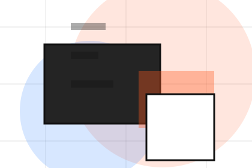
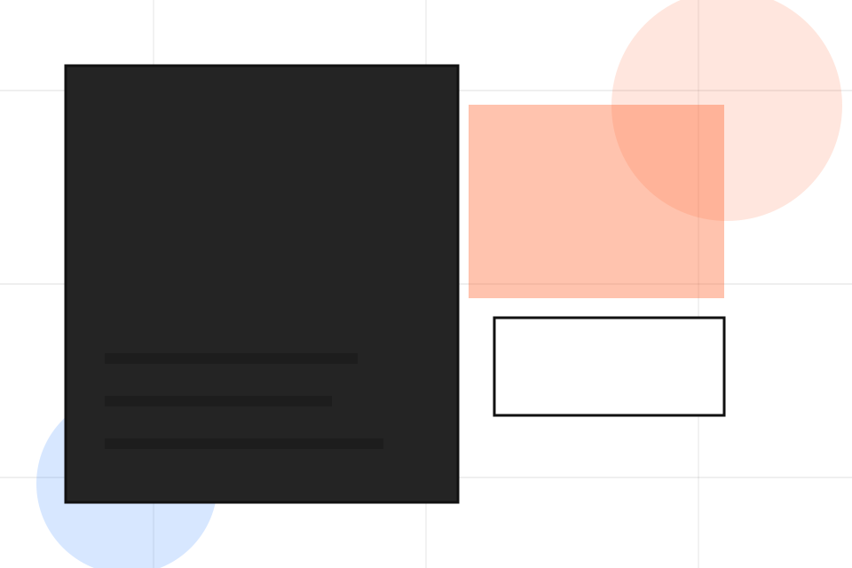
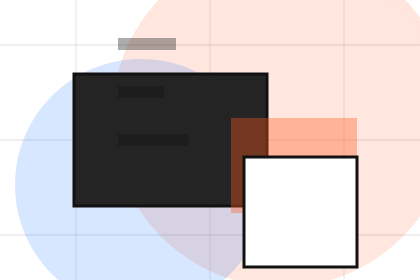
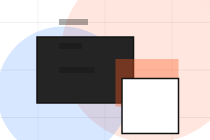
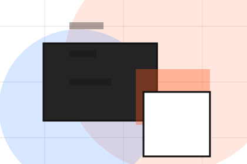
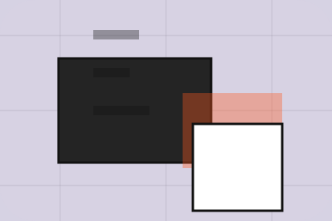

Best Fit
Who should use operations and when it belongs in the services journey.
Services / 01
Services opens as a clear consulting decision hub: what Vector offers, who it helps, why it matters, and which route to take first.
The first screen combines positioning, proof, primary action, and fast internal navigation, so people can act immediately or compare the rest of the services route with context.
Idea-led editorial hero
Select the closest route and Vector keeps the next step, proof, and follow-up expectation aligned with clarity, leverage and measurable progress.

Services / 02
Advisory explains the practical scope, best-fit situations, and expected outcome so consulting visitors can compare options without decoding jargon.
The section keeps the offer concrete: what is included, who it is best for, what decision it supports, and which linked route gives the deeper detail.
Explore ServicesWho should use advisory and when it belongs in the services journey.
The practical benefit visitors should expect after choosing this route.
Where to compare details, pricing, support, or contact options before committing.
Services / 03
Strategy explains the practical scope, best-fit situations, and expected outcome so consulting visitors can compare options without decoding jargon.
The section keeps the offer concrete: what is included, who it is best for, what decision it supports, and which linked route gives the deeper detail.
Explore ServicesVector structures strategy around best fit, what changes, and a clear next route so visitors can compare the block quickly before they send a brief.
Send BriefServices / 05
Growth explains the practical scope, best-fit situations, and expected outcome so consulting visitors can compare options without decoding jargon.
The section keeps the offer concrete: what is included, who it is best for, what decision it supports, and which linked route gives the deeper detail.
Explore ServicesWho should use growth and when it belongs in the services journey.
The practical benefit visitors should expect after choosing this route.

Where to compare details, pricing, support, or contact options before committing.
Services / 06
Transformation explains the practical scope, best-fit situations, and expected outcome so consulting visitors can compare options without decoding jargon.
The section keeps the offer concrete: what is included, who it is best for, what decision it supports, and which linked route gives the deeper detail.
Explore ServicesWho should use transformation and when it belongs in the services journey.
The practical benefit visitors should expect after choosing this route.
Where to compare details, pricing, support, or contact options before committing.
Services / 07
Workshops explains the practical scope, best-fit situations, and expected outcome so consulting visitors can compare options without decoding jargon.
The section keeps the offer concrete: what is included, who it is best for, what decision it supports, and which linked route gives the deeper detail.
Explore ServicesWho should use workshops and when it belongs in the services journey.
The practical benefit visitors should expect after choosing this route.
Where to compare details, pricing, support, or contact options before committing.
Services / 08
Retainers explains the practical scope, best-fit situations, and expected outcome so consulting visitors can compare options without decoding jargon.
The section keeps the offer concrete: what is included, who it is best for, what decision it supports, and which linked route gives the deeper detail.
Explore ServicesVector structures retainers around best fit, what changes, and a clear next route so visitors can compare the block quickly before they send a brief.
Send BriefServices / 09
Benefits defines the better state Vector is built to create, with enough detail to make the promise believable.
A strategy studio site with large editorial type, idea-led modules, mosaic proof, and workshop conversion. The section grounds that direction in concrete benefits, visible tradeoffs, and a next route visitors can use when the promise feels relevant.
Explore Services

Benefits defines what becomes clearer, easier, or safer when Vector is the chosen route.
Services / 10
Vector closes the services route with a clear action, a quick reminder of the value, and a low-friction way to send a brief.
Visitors who are ready can use the primary action. Visitors who are still comparing can scan the section links, proof, and support routes before they send a brief.
Send BriefThe final block keeps the choice simple: act now, compare one more proof route, or send enough detail for a focused response.
Send Briefclarity, leverage and measurable progress
A strategy studio site with large editorial type, idea-led modules, mosaic proof, and workshop conversion. Services ends with a direct path to send a brief, plus enough context for visitors who still need to compare.

Send BriefInformation is provided for planning and should be reviewed for the final client, location, and operating rules.